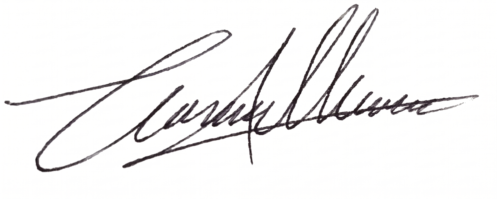

Abrir Expediente
N° 11-09-C&C
⚖️
Tribunal Supremo del Corazón
JUZGADO DE PRIMERA INSTANCIA EN LO SENTIMENTAL
Expediente:
N° 11-09-C&C
Fecha de los hechos:
11 de Septiembre
Asunto:
Cédula de Notificación y Declaración Irrefutable
Dirigido a:
Celeste Angélica Cal Chén (alias: My Sky Blue )

Parte Defensora
Ing. Cristian Herrera
Dictar Fallo a Favor
CASO GANADO
A FAVOR DE CRISTIAN HERRERA